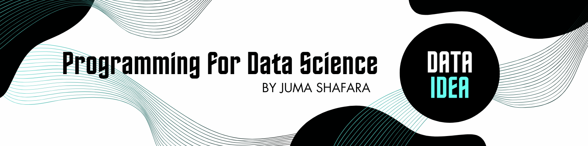

# your solution hereNobel Prize Laureates Exercise
Here are ten questions based on the Nobel Prize laureates dataset. Each question involves a mix of data exploration, cleaning, and analysis tasks.

Here are ten questions based on the Nobel Prize laureates dataset. Each question involves a mix of data exploration, cleaning, and analysis tasks. You can use Python and libraries such as pandas, matplotlib to solve these questions.
You can download the Nobel Prize Laureates dataset from opendatasoft
- How many Nobel Prize laureates are included in the dataset?
- Which country has the highest number of Nobel laureates?
# your solution here- What is the distribution of Nobel laureates across different prize categories?
# your solution here- How many Nobel laureates were awarded in each decade?
# your solution here- Are there any missing values in the dataset? If so, in which columns?
# your solution here- Perform data cleaning by handling missing values appropriately. Describe your approach.
# your solution here- Visualize the distribution of Nobel laureates’ birth countries on a world map.
# your solution here- Is there any correlation between a laureate’s birth year and the year they were awarded the Nobel Prize? Visualize if there’s any relationship.
# your solution here- Perform anomaly detection on the birth years of laureates. Identify and explain any outliers.
# your solution hereDon’t miss out on any updates and developments! Subscribe to the DATAIDEA Newsletter it’s easy and safe.
- Based on the dataset, can you identify any interesting trends or patterns regarding Nobel laureates’ demographics or the fields in which they were awarded?
# your solution hereThese questions cover various aspects of data exploration, cleaning, visualization, and analysis using the Nobel Prize laureates dataset. You can explore and analyze the dataset to find answers to these questions and gain insights into the demographics and distribution of Nobel laureates over time and across different categories.
Back to top